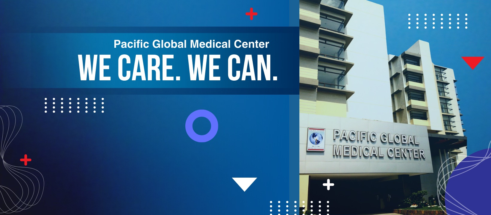

Emergency Room
Open 24/7 — call the trunkline and ask for the ER, or head straight to Mindanao Avenue.
Novaliches · Quezon City · Since 2010
"We Care. We Can." — a full-service hospital on Mindanao Avenue offering diagnostics, emergency care, immunization, and community health programs for Novaliches families.
Care areas PGMC has featured on its official page — confirm specialty schedules and rates when you call.
Open 24/7 — call the trunkline and ask for the ER, or head straight to Mindanao Avenue.
Pulmonary function test (spirometry), arterial/venous blood gas, ventilation support, chest physiotherapy, and nebulization. Ask for current rates.
Vaccination programs for infants, children, pregnant women, and elderly patients.
Cardiology-linked health education — heart-healthy habits, checkups, and lifestyle screening.
Facebook lists the hospital as always open — confirm the clinic or specialist you need when you call ahead.
Reach operators via (02) 8248-7400 for admissions, billing, and general inquiries — same line, loc. 1017 for Emergency.
Outreach PGMC has run for the Novaliches community, based on its official Facebook posts.
Community drive
Blood drives held with the Philippine Blood Center — watch the Facebook page for the next schedule.
Awareness
Seasonal tips on heart health, immunization, and everyday wellness shared with patients and followers.
Careers
PGMC regularly posts openings for medical and office staff — follow the page for current listings.
Pacific Global Medical Center has served Novaliches, Quezon City since 2010 from its Mindanao Avenue location — offering emergency, diagnostic, and outpatient care to the surrounding community.
With nearly 19,000 Facebook followers and the motto "We Care. We Can.," this sample site gives patients a clean landing page for contact numbers, location, and hospital identity — easier to find than scrolling a news feed.

Lot 2B Mindanao Avenue, Novaliches, Quezon City
Call the trunkline for admissions, billing, and general inquiries — or head to the Emergency Room any time, day or night.
Trunkline (02) 8248-7400
Emergency 24/7 (02) 8248-7400 loc. 1017
Address
Lot 2B Mindanao Avenue, Novaliches
Quezon City, Philippines 1116
Facebook facebook.com/pgmc2013
We Care. We Can.
This quotation sample gives patients a clean landing page for phone, map, and hospital identity alongside your active Facebook page.
Message on Facebook